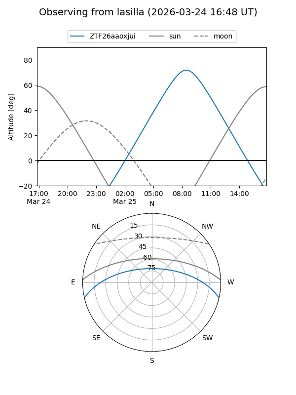
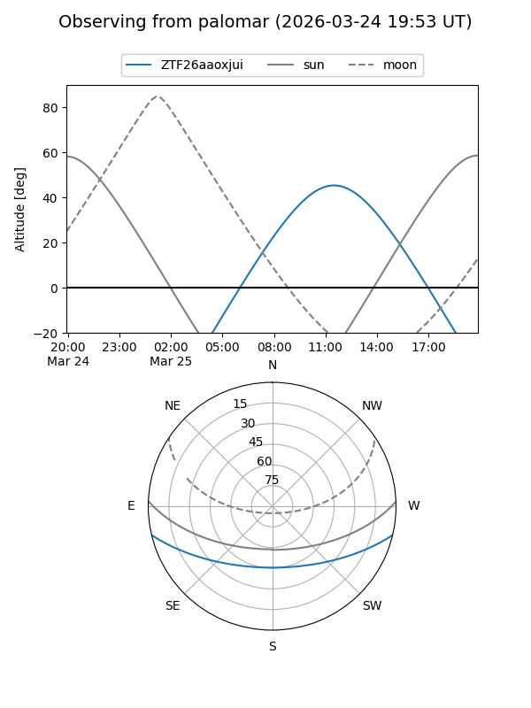

ZTF26aaoxjui
Target ZTF26aaoxjui at 2026-03-25 12:19
Aliases and brokers:
FINK: link
Lasair: link
ALeRCE: link
alt names
ZTF26aaoxjui (ztf,fink_ztf)
Coordinates:
equatorial (ra, dec) = 238.2584,-11.14709
equatorial (HMS+DMS) = 15:53:02.01,-11:08:49.54
galactic (l, b) = (358.0949,+31.66659)
Flags:
Photometry:
last ztfg=16.39, ztfr=15.54
1 ztfg, 1 ztfr detections
Lightcurve
Visibility


Additional plots